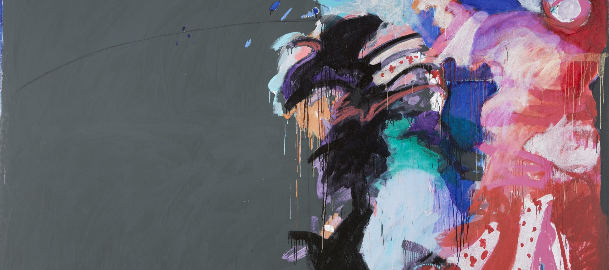

Creators Space:
Njideka Akunyili Crosby, Toyin Ojih Odutola, John Akomfrah, African Design, Hank Willis Thomas Debuts in London, and Women Working in Abstraction
Written by Victoria L. Valentine
Image by Mary Lovelace O'Neal
THE FALL SEASON continues with an international slate of black artists presenting new and important work in the United States and abroad. The Whitney is hosting Toyin Ojih Odutola‘s first exhibition in a New York museum. A monumental exhibition of African design is making its U.S. debut at the High Museum in Atlanta. Njideka Akunyili Crosby has a pair of shows at the Tang Teaching Museum in Upstate New York and the Baltimore Museum of Art. “The Beautiful Game” is Hank Willis Thomas ‘s first solo show in the UK. Solo exhibitions featuring African American artists Al Loving, McArthur Binion, and Lezley Saar, also opened in October. Pascale Marthine Tayou‘s works are on view in Miami and Julie Mehretu has a show in Spain. Meanwhile, two exhibitions of note draw attention to groundbreaking legacies. The National Museum of Women in the Arts is celebrating the work of black women working in modern and contemporary abstraction, including Alma Thomas, Jennie C. Jones, Howardena Pindell, and Mary Lovelace O’Neal (shown above). And then in Paris, a major retrospective of Malian photographer Malick Sidibé is on view at the Cartier Foundation.